Troubleshooting
Setup Bluefruit Board that has WHITE Connector
INFO_UF2.TXT file is from earlier than 2024. To reiterate, only if the date is earlier than 2024 do you need to follow the additional steps below.

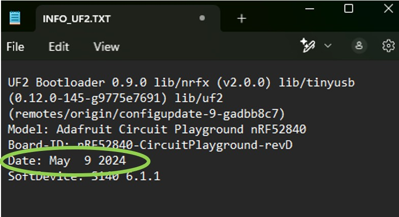
-
Install the Arduino IDE
- Click here and then download the Windows version of the Arduino IDE.
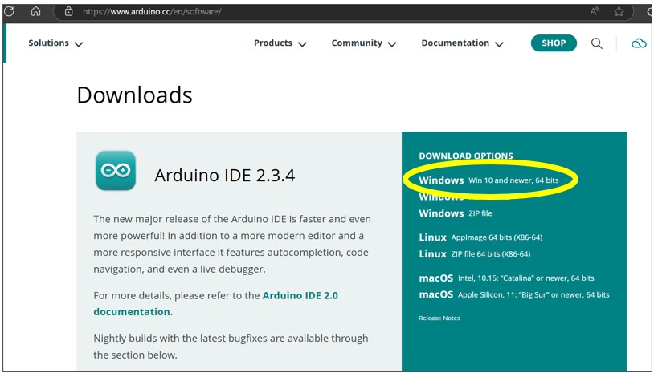
- Click "Just Download" on the next two screens.
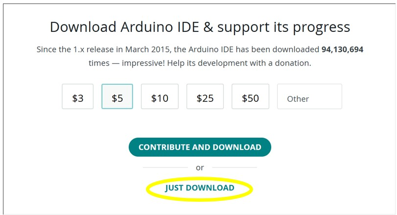
- Click the downloaded .exe file to install Arduino IDE.
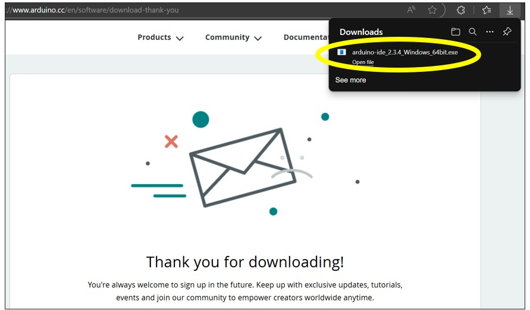
- Click "I Agree", "Next", "Install". Wait for the installation to complete, then click "Finish", which will also open Arduino IDE.
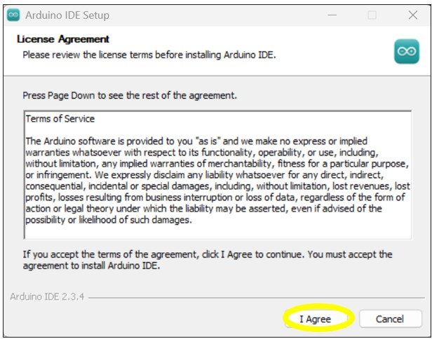
- In Arduino IDE, click "File", then "Preferences".
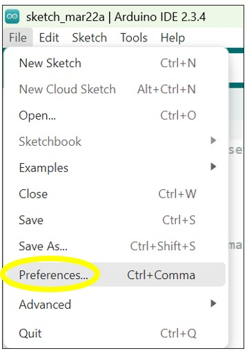
- In Preferences window, copy/paste the following into the "Additional boards manager URL":
https://adafruit.github.io/arduino-board-index/package_adafruit_index.json
Then click "OK" and restart Arduino IDE (close it and re-open it).
- In Arduino IDE, click "Tools", "Board", "Boards Manager".
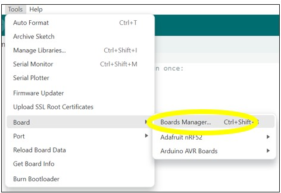
- In "Boards Manager", search "Adafruit nRF52", find it below, and click "Install". It will take several minutes to install. You'll know it's complete when "Install" changes to "Remove".
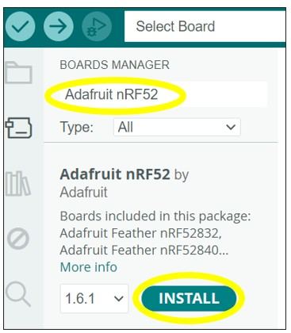
- Go to "Tools", "Board", "Adafruit nRF52", "Adafruit Circuit Playground Bluefruit".
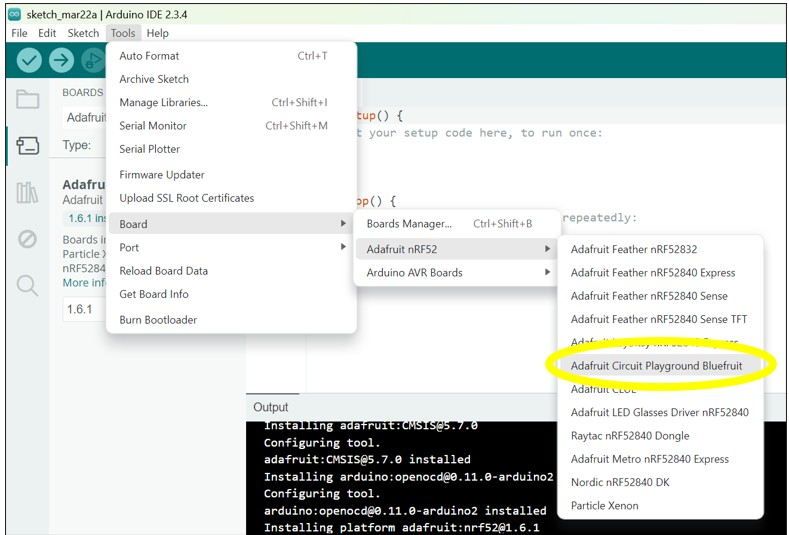
- Go to "Tools", "Port", then select the COM Port that says "Adafruit Circuit Playground Bluefruit" (ensure your Bluefruit is plugged into your computer, and double-press the Reset button if needed).
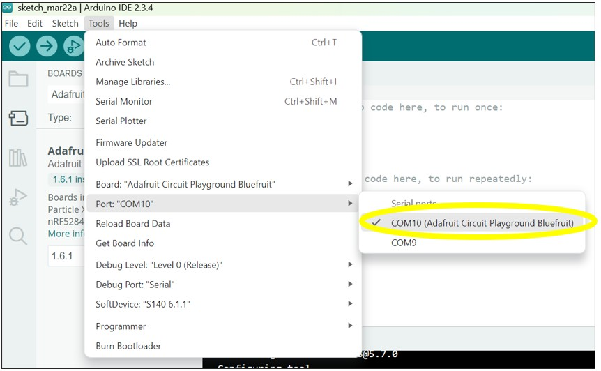
- Go to "Tools", "Programmer", "Bootloader DFU for Bluefruit nRF52"."
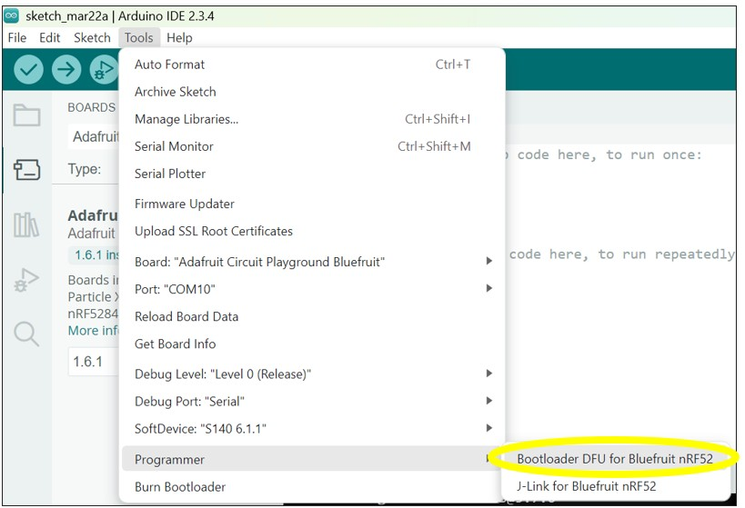
- Go to "Tools", "Burn Bootloader".
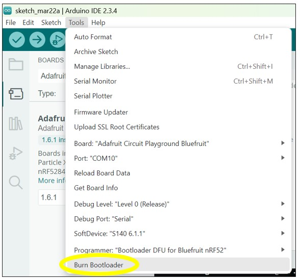
- Wait for the bootloader to be downloaded onto your Bluefruit. Do NOT unplug your Bluefruit or press any buttons on your Bluefruit during this step! You will know it's complete when it says "Done burning bootloader".
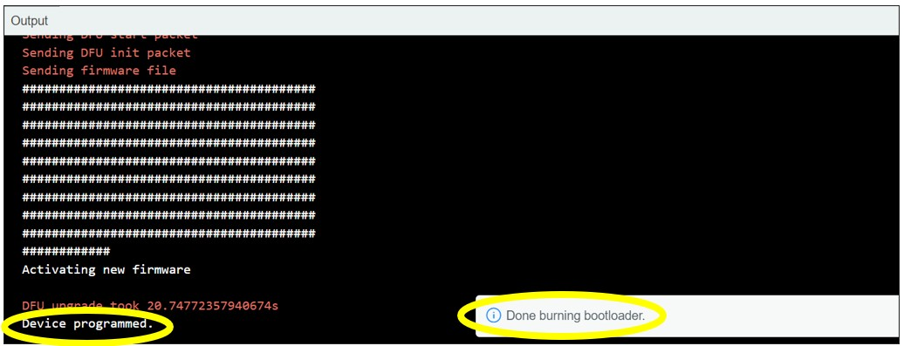
-
To ensure you followed the steps correctly, open up the CPLAYBTBOOT drive and check the
INFO_UF2.TXTfile. It should now have a date in 2024. - When all these steps are complete and the
INFO_UF2.TXTfile has been successfully updated, return to Step 5 from the Initial Steps page and continue the instructions from there.
- Click here and then download the Windows version of the Arduino IDE.